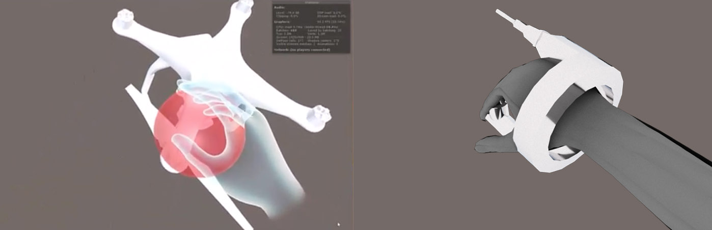
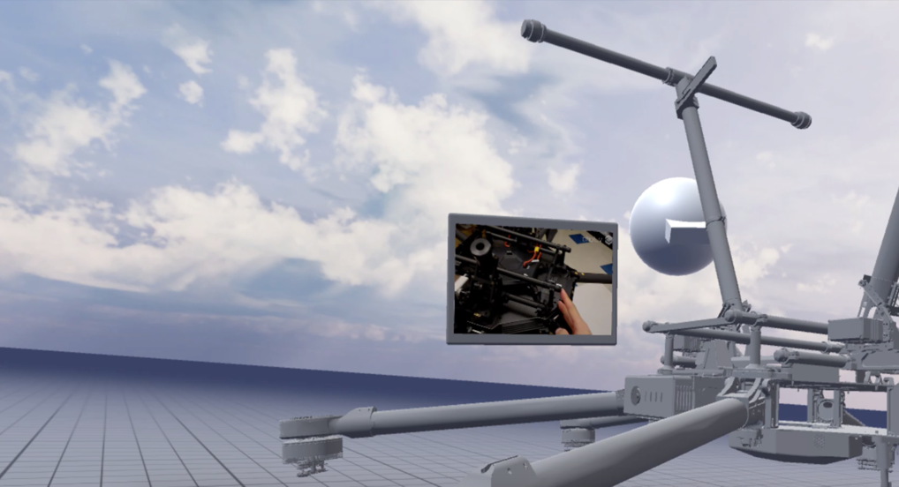
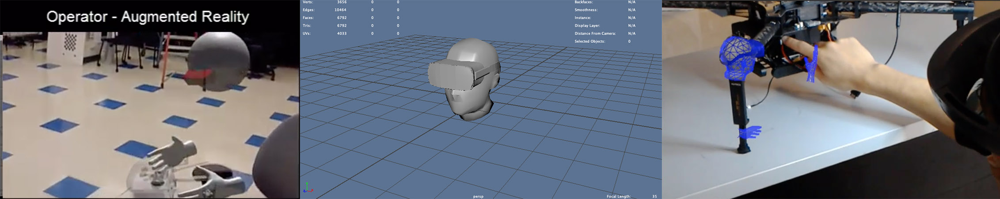
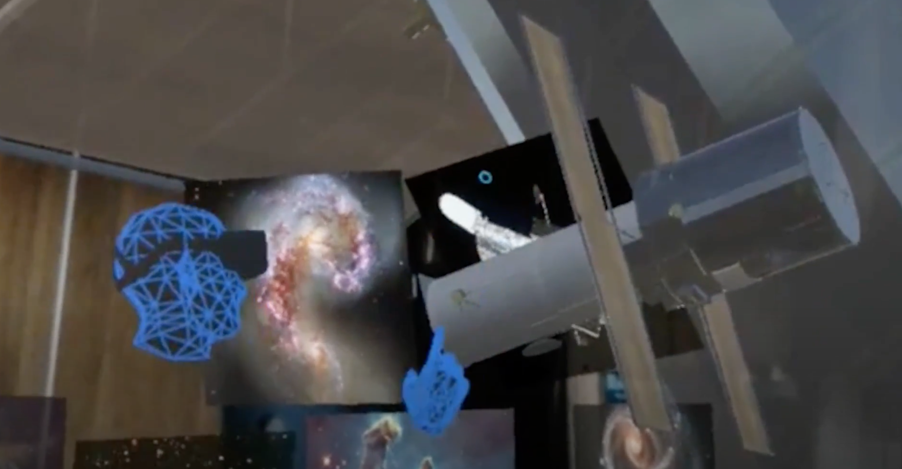

My friend came to me with a pretty well thought out product that he and some of his peers in the Center for Augmented Cognition had developed over the last year. In short, it was a remote telepresence application, where a user in VR would show an operator in AR how to fix a machine. The idea was a maintenance operator on an oil rig who didn't have the knowledge to fix a specific piece of equipment, could call using Pengram and an experienced operator could hop into VR and show them how to perform the necessary tasks to get it working. I was sold.
In the initial stages of this project, I had more of a supplemenatry role as a UI/UX designer, but on the side spent quite a bit time doing research to validate design assumptions and figure out if we were truly solving the problem we were saying we were solving. Spoiler. We were not.
This is my favorite piece of the research, spent the most time on it, and I think it captured the state of AR instructions pretty well.
Link to docWhile in this stage of the project, my contributions were mainly from a strategy and business angle: but I did do some visual work to polish up the user experience before some important presentations. The first thing I was brought on to do was design a virtual tool that could allow a user to grab things, but also draw. Previously, the tool had been a giant red ball attached to the persons hand, but I designed a type of wrist based hand-tool that satisfied the design constraints.
|  |
They also needed me to design an environment for the VR side of their telepresence application. I came up with an infinite grid like structure, under a nice sky. I based this design mostly off the Oculus Medium design blog.
|  |
The original operator avatar was literally a ball with a cube stuck in it's head, so I went around to fixing that as well. Realizing we didn't have the budget to create an animated avatar with articulated eyes or a face, I decided to design one that had a headset over the eyes to avoid this issue.
|  |
In this time, the core founding members would take the project to Microsoft's imagine cup, winning first place at U.S nationals, and going on to worlds.
At the same time, what really stuck out to me about the product and it's scalability was not the live telepresence aspect, which had a host of problems such as networking issues, video issues and most importantly, a need for incredibly accurate 3D models: but rather it was the app's ability to record telepresence. The promise of recording teachers and operators in a way which captured hand gestures and 3D motion was incredibly compelling to me. I spent a couple weeks building a prototype for the Lawrence Hall of Science to test out the idea. I downloaded some satellite models from the NASA website and recorded an educational series for them. I still think there was something interesting here. Alas, at the point we were making the mistake of optimizing for venture capital and awards, which definitely mislead us a bit . Link to the video
|  |